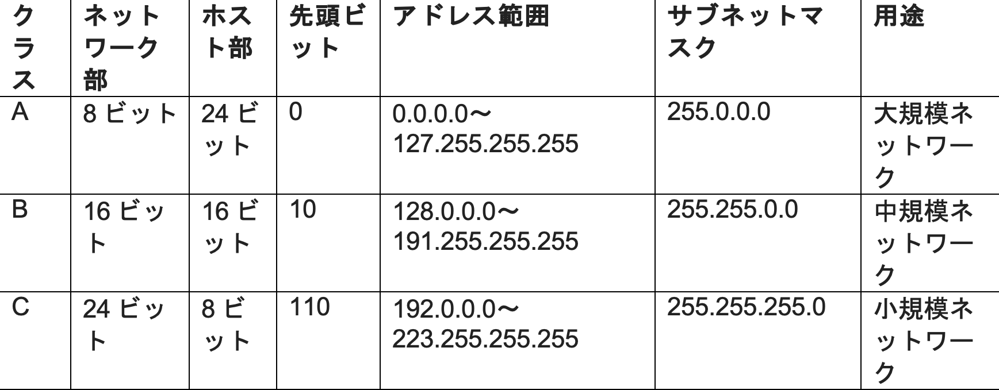

IP アドレスを2進数に変換する
IPアドレスを4つのオクテットに分割する
例:-192.168.10.3 → 192, 168, 10, 3
各オクテットを8ビットの2進数に変換する
- 192 → 11000000
- 168 → 10101000
- 10 → 00001010
- 3→ 00000011
表示形式
• 分割形式:-11000000.10101000.00001010.00000011
• 連結形式(32ビット):11000000101010000000101000000011
サブネットマスク
IPアドレスはサブネットマスクという値とペアになって表現されます。
この値もIPアドレスと同様に32ビットの2進数で、
"255.255.255.0"のようにドットを使って、4つのブロックの
10進数で表します。もともとインターネットの世界には、大規模、
中規模、小規模と、3種類の大きさのネットワークしかありませんでした。
その後、この3種類のネットワーク配下に下位(サブ)のネットワークを作って、
もっと柔軟にネットワークの大きさを決めることができるようにしました.
このサブのネットワークをサブネットと言います。3種類しかなかったネットワーク
を分割するために作られたのが、サブネットマスクです。
Subnet mask を2進数に変換

IPアドレスの2進数とSubnet mask の2進数をAND演算する
| 項目 |
10進数 |
2進数 |
| IPアドレス |
192.168.10.3 |
11000000.10101000.00001010.00000011 |
| サブネットマスク |
255.255.255.0 |
11111111.11111111.11111111.00000000 |
| AND演算結果 |
192.168.10.0 |
11000000.10101000.00001010.00000000 |
AND演算した2進数結果を10進数に変換
| オクテット |
2進数 |
10進数 |
| 第1 |
11000000 |
192 |
| 第2 |
10101000 |
168 |
| 第3 |
00001010 |
10 |
| 第4 |
00000000 |
0 |